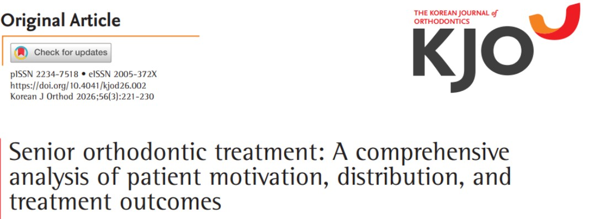
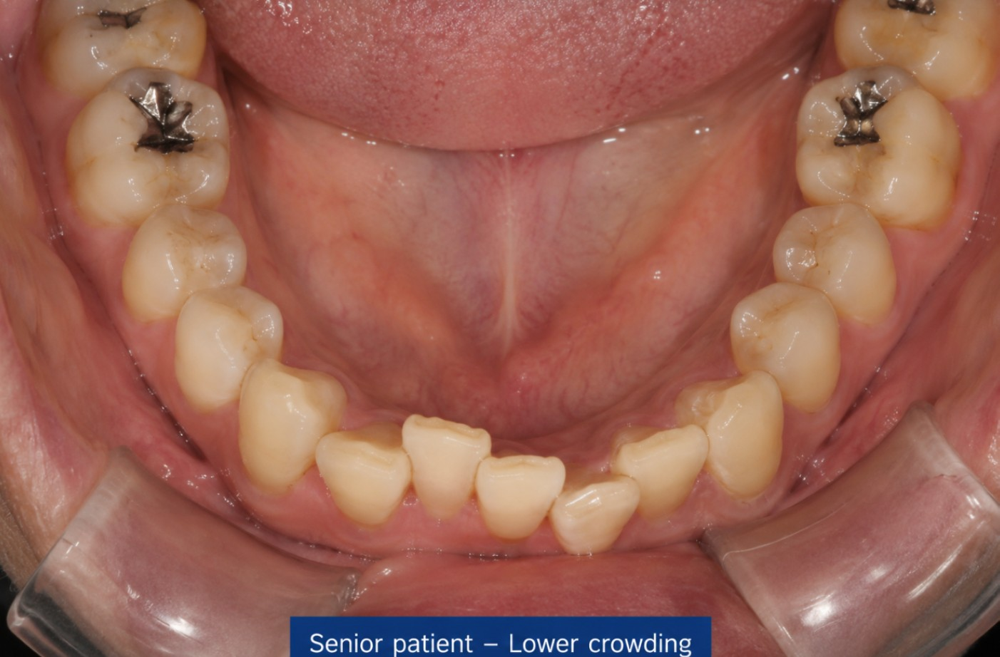

안녕하세요 교정과 전문의 손창한입니다 ^^
얼마 전 아버지께서 전화가 오셨습니다.
"아들아, 지금 내 나이에도 교정 많이 하나? 앞니가 점점 틀어지는 것 같은데 교정으로 할 수 있나 해서.."
그러고 보니 몇년 전 장모님께서도 비슷한 말씀을 하신 적이 있습니다. 두 분 다 젊었을 때는 별 문제가 없으셨는데 어느 순간부터 앞니가 변한 것 같아 신경 쓰인다구요.
이게 비단 저희 가족만의 고민이 아닌 것이,
대학병원에 있으면서도 한 달에 몇 번은 저희 부모님 연배의 시니어 환자분들이 찾아오십니다.
마침 지난 달 발표된 따끈따끈한 대한교정학회 논문을 읽다가 시니어 환자분들의 교정 치료를 다룬 논문이 있어 흥미롭게 읽기도 했고, 생각보다 많은 어르신들이 치료를 원하시는 분야인 것 같다는 생각에 블로그를 작성하면 좋겠다 싶었습니다.

Jinsuk Lee 등, "시니어 환자의 교정 치료 — 환자분들의 동기, 분포, 그리고 치료 결과", Korean J Orthod 2026;56(3):221-230
시간이 지나도 영원히 변하지 않는 것은 없죠. 치아도 마찬가지입니다.

나이가 들면서 잇몸뼈가 조금씩 낮아져 치아를 지지해주는 기반이 약해지면 치아들을 서서히 이동하기 시작합니다. 특히 치아들은 일생에 걸쳐 앞쪽으로 유동하려는 경향이 있습니다. 그렇기 때문에 점점 앞니가 틀어지게 되고, 심한 경우 치아 하나가 아예 배열에서 이탈하기도 하죠.
혹은 반대로 치아를 둘러싼 잇몸뼈의 지지가 약해지면 치아가 바깥쪽으로 벌어지거나 앞으로 쓰러지기도 하는데 이럴 경우 앞니 사이에 공간이 생기기도 합니다.
여기에 한 가지가 더해집니다.
나이가 들면서 얼굴 피부도 점차 아래로 처지게 되죠. 피부 탄력이 떨어지면서,
웃을 때 위 앞니가 잘 보이던 것이 시간이 지날수록 아래 앞니가 주로 보이는 방향으로 바뀝니다.
그래서 아래 앞니의 배열이 시니어 환자분들의 미소에 생각보다 훨씬 중요한 역할을 하게 됩니다.
결론부터 말씀드리면, 가능합니다.
나이 자체가 교정의 금기 사항은 아니에요^^
치아는 나이와 상관없이 적절한 힘이 가해지면 움직여요. 중요한 건 나이가 아니라 치아와 잇몸의 건강 상태예요.
(아무리 나이가 20대, 30대여도 잇몸 건강이 엉망이라면 교정치료를 하지 못하는 것도 마찬가지!)
실제로 최근 국내 대학병원 교정과에서 60세 이상 환자 146명을 분석한 연구를 본 결과 (아까 그 논문),
이 환자들의 95%가 자연치를 20개 이상 보유하고 있었어요.
즉, 교정과를 찾아오시는 어르신들은 대부분 치아 건강이 꽤 좋은 분들이에요.
그리고 실제로 교정 치료를 받은 분들에서 심미성의 개선과 교합 개선이 확인됐어요.
연구에서 흥미로운 결과가 하나 있었어요.
교정과에 직접 찾아오신 60대 이상의 환자분들을 세본 3분 중 2분은 (65%) 앞니 배열을 개선하고 싶어서 오신 분이었으며 앞니 배열을 개선하고 싶은 환자분의 치료 수락률은 무려 84.6% 였습니다.
한 번 직접 상담을 받으러 오신 분들 중 대부분이 치료를 하겠다고 결정하셨다는 뜻이에요. 반대로 말하면, 망설이다 안 오시는 게 더 아쉬운 상황인 것이죠.
특히 이런 분들께 교정이 잘 맞아요.
1. "나이 들어 교정하면 뼈가 약해서 위험하지 않나요?"
— 앞서 설명드렸듯, 나이가 중요한 것보다는 잇몸뼈의 건강 상태가 중요합니다. 교정 치료는 치아에 약한 힘을 지속적으로 가해 잇몸뼈 안에서 서서히 이동시키기 때문에, 교정력에 대한 올바른 이해와 조심스러운 적용을 한다면 치료가 가능한 경우가 대다수입니다. 물론 교정과를 수련하신 교정과 전문의 선생님이 이 부분은 제일 잘 알고 치료하실 거라 생각하구요.
2. "치료 기간이 너무 길지 않나요?"
— 시니어 교정은 대부분 전체 치열을 다 바꾸는 것이 아니라 앞니 중심의 부분적인 교정치료예요. 치료 범위가 제한적인 만큼 기간도 비교적 짧은 편입니다.
3. "이 나이에 교정이 의미가 있을까요?"
— 교정 치료를 받은 60대 이상의 환자들이 치료 후 자신의 얼굴이 더 젊고 건강해 보인다고 느끼는 정도가
젊은 환자들보다 오히려 더 크다는 연구 결과도 있습니다.
오래 망설이다 결정한 만큼, 변화에 대해 느끼는 만족감도 큰 것 같아요.
4. "이 나이에 교정한다고 하면 주위에서 흉 볼 것 같아요"
— 누군가는 흉을 볼 수도 있겠죠. 하지만 제 생각엔 괜한 걱정이 아닐까 싶어요 😊
실제로 많은 시니어 환자분들이 교정치료를 받고 계시고, 과거와 달리 요즘 60대는 사회·경제적으로 누구보다 활발한 세대입니다.
교정 치료를 부담스러운 의료행위가 아닌, 능동적인 라이프스타일의 일부로 자연스럽게 받아들이기 시작한 거예요.
여기에 투명 교정 장치의 발전으로 치료 중 보이는 것에 대한 부담도 확 줄었습니다.
주변에 알게 모르게 교정 중인 어르신들이 생각보다 많은 이유예요.
아버지는 조만간 제게 오셔서 치료를 진행하실 예정입니다.
장모님께도 이렇게 말씀드렸어요.
"치아랑 잇몸 상태 보고 결정하면 되니까, 한번 편하게 오세요."
그게 전부입니다. 나이를 먼저 걱정하실 필요는 없어요.
비슷한 고민을 가지고 계신 분들이 계시다면 가까운 교정과 전문의 선생님을 찾아가 보세요.
오랜 시간 망설였다면 더더욱요!
서울대학교 치의학대학원 - 치과교정학교실
서울대학교 치과교정과 동문 찾기 · snuorthodontist.com
대한치과교정학회
학회원 및 치과교정과 전문의 찾기 · www.kao.or.kr
이상 교정과 전문의 손창한이었습니다 :)